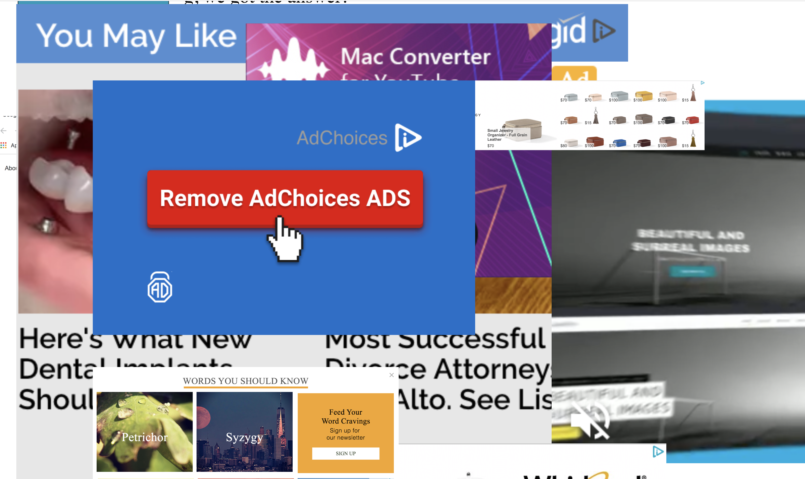

I’m Heru Wang, a current student in the Digital Media Art program at San Jose State University. I have always been a visual person and passionate about art and design. I am from China and have an all-time Chinese stomach.
My projects reflect how I react to the world around me, especially people, emotions, and all kinds of relationships. In response, my work focuses on delivering a positive attitude to the viewers/users. For example, in the project “What is your final destination?”, I created a map to get lost. I decided to create a city that included everywhere we need to be because people are so busy these days. In order to show how busy people are, I thought making a gif would express the idea clearer. Therefore, I explored After Effects for the first time. I love this processing of creating and gathering my skills together to make my idea come true. This project is to draw people’s attention on if they forget to check where their destination of life is and not to be drown in daily survival.
Digital media is my third language besides Mandarin and English to express my idea. I love the powerful impact it can make in this world. My future dream job is to become a UI/UX designer to help people with a better visual pleasure and using experience through digital media.
Project 1
Do you like being alone?
People tend to live on social media and love being around with people. However, they live in people’s eyes. A lot of times, people do not like to hang out with themselves.
Tools: Premiere
Project 2
How do you feel?
This video will be installed in a gallery show about research of micro facial expression and psychological response. The purpose behind this project is to observe how the audience will response to different facial expressions accordingly. Moreover, I want to convey the idea that we should not be affected or controlled by other people's facial expressions or emotions because their emotions are temporary and volatile. We should value ourselves no matter what since getting constant approval from others is impossible.
Tools: Premiere
Project 3
 ads InteractionAn interative website that reflects viewers' most annoying online browsing experience which is bothered by advertisements.
Project 4
 Grand Circus
Grand Circus
A circus website that has funtions of displaying the circus shows, information of the circus, and tickets purchasing. There are some undiscovered secrets of circus people should know.